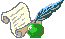

Меня зовут
Евгений Корниенко
адрес:
cordially@narod.ru
Коментарии можно также писать в конце этой странички
Пишите, если есть идеи по темам сайта
- комментарии к фотографиям и о фотографировании
- советы по аквариуму
- замечания по самоделкам, и что добавить
- где ещё красивые рыбки, или что стоит фотографировать
в отпуске
- плохие фотографии, претензии к оформлению, ошибки на сайте
При перепечатке или показе материалов с сайтов
- cord70.github.io/cyber ( cyber-ek.ru cordially.narod.ru )
- cord70.github.io/photo ( photo-ek.ru album-ek.narod.ru )
пожалуйста, показывайте активную ссылку на цитируемую страницу или рисунок, или на сайт.
Автор сайта

Родился в 1955 году. Сайт создан в 1996 году. В обоих смыслах сайт ветеранский, но я занимаюсь им не очень серьёзно. Иногда он зависает без изменений на много месяцев.
Так как фотографировать легко, фото-раздел сайта обновляется гораздо чаще, чем философский раздел о происхождении сознания и самой природы .
Фотоаппарат у меня был всегда. Вы можете не знать такую камеру как Смена . Потом были Зоркий , Зенит . C 2000 года у меня были цифровые камеры HP-C200, Nikon-cp880, Nikon-cp4500, Fuji-f30 . Это достаточно продвинутые камеры карманного формата.
Больше всего мне нравится фотографировать цветы, рыбок и жучков, хотя их названия и особенности для меня - тёмный лес. По мере работы над сайтом, и благодаря замечаниям читателей, я потихоньку исправляю ошибки в подписях к фотографиям.
Евгений Корниенко